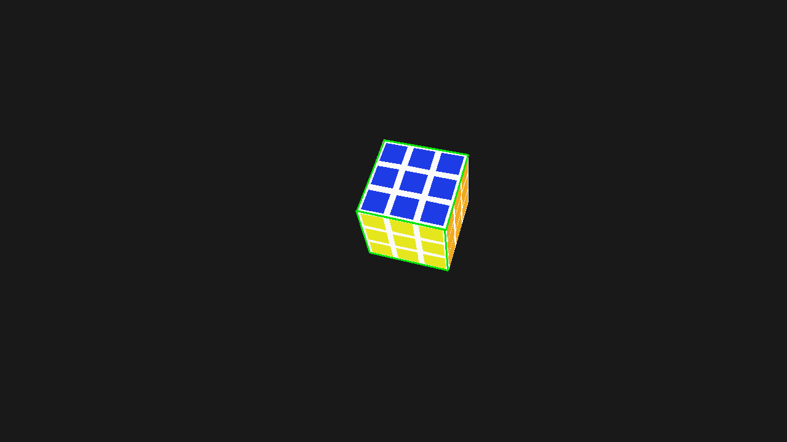
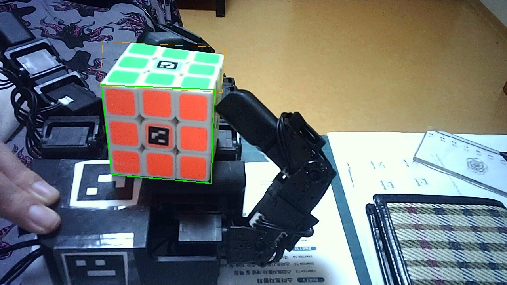
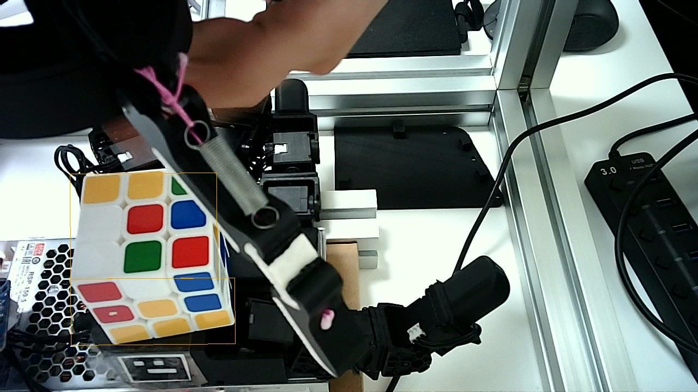
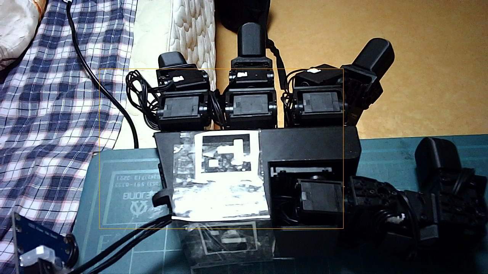

마커 없는 큐브 pose 입력부
2026-11-16. 실물 구동 없음. 합성 정확도는 실물 정확도가 아니다.
합성 영상 전체 경로

{
"synthetic_only": true,
"position_error_mm": 0.48668665179777076,
"orientation_error_deg": 0.19205863931906753,
"visible_faces": [
"F",
"D"
],
"reprojection_rms_px": 0.45298095209448,
"camera_binding_verified": false,
"physical_pose_verified": false,
"policy_pose_ready": false
}실제 저장 사진: 선명한 큐브

[
{
"index": 0,
"accepted": false,
"reason": "Sticker centers do not fit a perspective3x3 face grid"
},
{
"index": 1,
"accepted": true,
"refined_corners_px": [
[
255.39610888849097,
214.46410255938562
],
[
539.9632577061319,
225.79264464119075
],
[
532.6176447754788,
463.12401554855717
],
[
281.5428229454928,
440.3337986834824
]
]
}
]실제 저장 사진: 가림

[
{
"index": 0,
"accepted": false,
"reason": "Sticker centers do not fit a perspective3x3 face grid"
},
{
"index": 1,
"accepted": false,
"reason": "Sticker centers do not fit a perspective3x3 face grid"
}
]실제 저장 사진: 빈손

[
{
"index": 0,
"accepted": false,
"reason": "Sticker centers do not fit a perspective3x3 face grid"
}
]실제 저장 사진은 수동 탐색 ROI로 영상 특징만 확인했다. 검증된6면 중심색·카메라 지정·좌표 등록이 없어 정책 pose는 발행하지 않는다. YOLO·ROS 실제 실행 및 카메라 노출/가림 조건은 후속 확인이 필요하다.